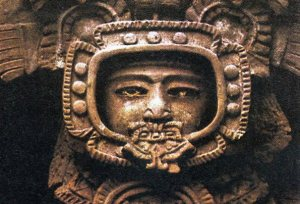
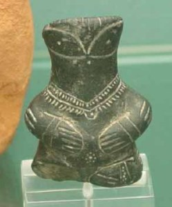
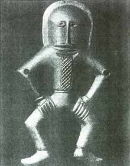

ความเชื่อกับ “เทพเจ้า” นำพาวิวัฒนาการความคิด [Date: November 3, 2014]
ดูเป็นบทความที่จะลึกลับเลยทีเดียวสำหรับครั้งนี้ แรงบันดาลใจในการเขียนบทความนี้มาจากการได้ลงทะเบียนเรียนในรายวิชา World Mythology เป็นการศึกษาตามรอย เทพปกรณัมใน อารยธรรม ต่างๆ
ผมเป็นคนที่ตื่นเต้นกับเรื่องราวเหล่านี้มาก เพราะเรื่องราวเหล่านี้มีบางอย่างที่อาจคิดว่า ถ้าไม่เกิดขึ้นจริงเรื่องราวที่เล่าต่อกันมาจะเป็นได้ขนาดนี้เลยหรอ ผมชอบที่ฟังหรือ ติดตามเรื่องราว เรื่องเล่า เพราะเรื่องบางอย่างเป็นแกนความคิดสำคัญให้กับสิ่งต่างๆทุกวันนี้ แม้แต่เรื่อง ลี้ลับ ต่างๆ ก่อนอื่นคงมีคนสงสัยว่าเทพกรณัมหมายถึงอะไรผม พูดแบบภาษาผม คือเรื่องราวที่เล่าเกี่ยวกับคนพิเศษ คนสำคัญวีรบุษ วีรสตรี ที่ถูกขนานนามว่า "เทพเจ้า" ในรายละเอียดความหมายผมคงไม่ได้รู้ลึกไปกว่านี้มาก
ผมชื่นชอบเรื่องราวเหล่านี้เพราะผมคิดว่ามันแอบแฝงสาระและเป็นแนวคิดสำคัญให้เกิดสิ่งหลายสิ่งในปัจจุบัน หากเราย้อนมองสังคมในปัจจุบันนี้เราจะรู้สึกว่าผู้คนต่างมีความเชื่อในหลายสิ่งลดน้อยลง เพราะแนวความคิดทางวิทยาศาสตร์ และผู้คนไม่เชื่อในสิ่งที่มองไม่เห็นหรือเรียกว่าสิ่งลี้ลับ แต่จะเชื่อเฉพาะสิ่งที่เห็นจริง สัมผัสได้จริง จะว่าไปในมุมมองหนึ่งถือเป็นเรื่องดีที่ทำให้คนมีการเชื่อแบบนี้ แต่อีกมุมมองก็จะทำให้คน เหล่านี้ล่องลอยไม่เชื่ออะไรซักอย่าง
ผมว่าที่ผู้คนสมัยก่อนนั้นมีเรื่องเล่ามากมาย อย่างหนึ่งถ้าเรามองแบบ ตรรกะ มีเหตุผลหน่อยก็อาจมองว่าเหมือนการสร้างกฎเกณฑ์บางอย่างในการอยู่ในสังคม เพราะหากเราไม่เชื่อไม่มีกฎเกณฑ์ ก็คงจะไม่เหลือเผ่าพันธ์ มาถึงทุกวันนี้... หากใครเคยดูภาพยนต์ในหลายเรื่องอาทิ Clash of the Titans, Thor , Harry potter ,Hercules หรือหนังอีกมากมายที่มีการนำเรื่องราวของเทพปกรณัมต่างๆเข้าไปมีบทบาท และส่วนใหญ่หนังเหล่านี้มักจะได้รับความชื่นชอบ สร้างรายได้มากมาย
ผมเคยสงสัยว่า มนุษย์เราเกิดมาได้อย่างไร? มนุษย์ผู้ไม่รู้ต้นกำเนิดตัวเองและมีความอยากรู้ ว่าต้นกำเนิดตัวเองนั้นเกิดมาอย่างไร?พยายามคิดค้นหาคำตอบแต่สุดท้ายแล้วก็ยังเป็นเพียงการสันนิฐาน (วิวัฒนาการก็เป็นหนึ่งเรื่องที่ผมสนใจ)ผมฟังเรื่องเล่าถึงการกำเนิดมนุษย์ในหลายๆอารยธรรม ส่วนใหญ่จะบอกว่าก่อนหน้าที่เราจะเกิด มีสิ่งกำเนิดขึ้นมาเรียกว่า เหล่าเทพเจ้า ซึ่งจะเป็นผู้ให้กำเนิดพวกเรา(มนุษย์โลก)
อย่างในเรื่องเล่าหรือหลักฐานที่ปรากฎขึ้นในสมัยโบราณ ก็มีเรื่องราวที่ทำให้เราได้ดำดิ่งลึกลงไป ด้วยความคิดที่ว่า เรื่องราวที่คนเหล่านั้นอยากจะนำเสอสู่คนรุ่นหลังคืออะไรกันแน่ หากเคยดูหนังหรือเห็นเรื่องราวเหล่านี้อย่างเช่นรูปปั้นที่มีลักษณะคล้ายกับนักบินอวกาศ ซึ่งก็ทำให้หลายคนตีความกันไปว่า เมื่อก่อนนี้อาจมีสิ่งมีชีวิตอื่นนอกจากมนุษย์เคยมาเยี่ยมเยือนเราก็เป็นได้
|
 Credit : http://www.thanasis.com/mmar99.htm |
 Credit : http://www.thanasis.com/mmar99.htm |
 Credit : http://www.thanasis.com/mmar99.htm |
เรื่องราวเหล่านี้ยังคงเป็นเรื่องที่ทำให้เราส่งสัย และทำให้ยากต่อการเชื่อว่า ในสมัยนั้นเหมือนหลายพันปีก่อนนั้นบรรพบุรุษของเราสามารถคิดค้นหรือทำสิ่งเหล่านี้ได้หรือไม่ หรือว่าเป็นพวกเราที่ไปทำเลียนแบบ ของบรรพบุรุษ ก็ไม่รู้ว่าใครเลียนแบบใครกันแน่ละครับ
ต่อมาคงเป็นกฎเกณฑ์การปกครองต่างๆที่ผมว่าน่าสนใจมาก อ่างเรื่องราวของศาสนาพราหมณ์ ฮินดูที่กล่าวถึงพระอินทร์ เราอาจคุ้นเคยว่าพระอินทร์นี่ก็คือ เทพเจ้าองค์หนึ่งแต่ หากฟังเรื่องราวที่เป็นเรื่องเล่าอย่างแท้จริง จะเล่ากันว่าพระอินทร์นั้นเป็นเพียงตำแหน่ง ผู้ที่จะขึ้นมาเป็นพระอินทร์ได้ก็ต้องมีการ บำเพ็ญเพียร จนสามารถเข้ามาเป็นพระอินทร์ ได้ นั่นก็คล้ายกับการปกครองในปัจจุบันของเราเลยใช่ไหมครับ
ยังมีเรื่องราวอีกมากมายที่ทำให้เรารู้แล้วก็ทึ่ง และก็จะกลับมามองดูว่าจริงๆ แล้วเรื่องราวเล่านั้นบางครั้งอาจไม่ใช่เรื่องราวที่เป็นเพียงตำนานก็เป็นได้ หลายคนที่ไม่เชื่อ ก็ไม่ได้ผิดแปลกอะไร แต่ก็อาจจะนำหลักบางอย่างมาใช้ มาประยุกต์ หรือหากนำมาเป็นสิ่งยึดเหนี่ยวจิตใจก็จะทำให้เราอยู่ได้โดยไม่ต้อง ฟุ้งซ่าน ล่องลอย นะครับ บทความนี้ไม่มีเจตนาจะ ดูหมิ่น ศาสนา หรือ อารยธรรมใดๆ มีจุดประสงค์เพื่อจะให้เห็นว่าตำนานเหล่านั้นคือ สิ่งที่บรรพบุรุษของเราทิ้งไว้เป็นแนวทางให้กับคนรุ่นหลังอย่างเราๆ ต่อไป